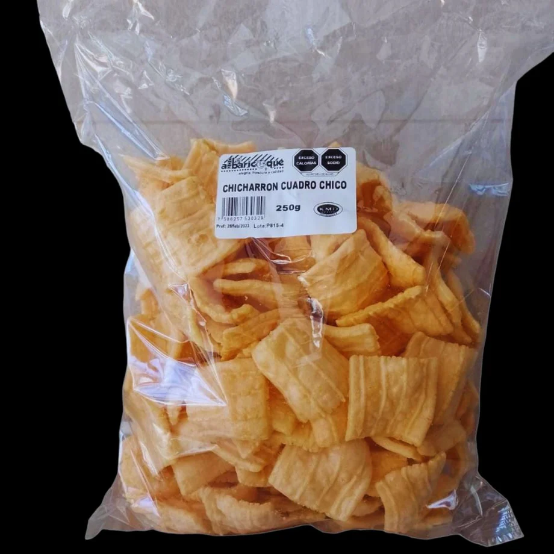
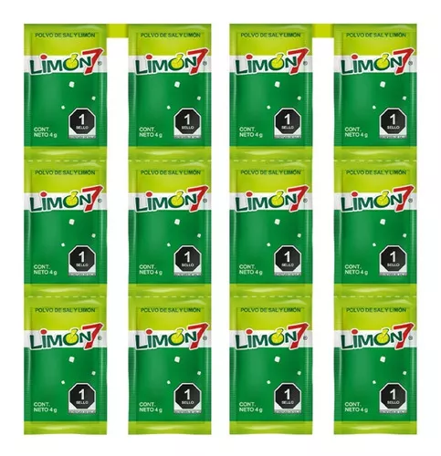

¡BIENVENIDO A HAMBREADOS.COM!
¿Alguna vez has tenido un hambre enorme y sin embargo nada de dinero o comida? ¡En Hambreados.com nos preocupamos por ti!
¡Con solo dar un par de clics estaras ordenando de todo tipo de productos para que dejes de ser un hambreado!
NUESTRA HISTORIA
La historia se desarrolla en el verano de 2024, cuando un grupo de amigos se reúne en las canchas para entrenar basketball. En ese lugar había una pequeña tiendita que era como un punto clave para todos los deportistas y visitantes. Esta tiendita ofrecía una variedad de productos, pero los favoritos del grupo eran dos en particular: los polvitos de sal y limón llamados Picalimón y unas clásicas bolsitas de chicharrones. Esos snacks no solo eran populares, sino que también tenían un lugar especial en las dinámicas del grupo.
Un día, durante uno de los entrenamientos, uno de los amigos, llamado Elías, compró una bolsa de chicharrones. Sin embargo, como suele pasar, el resto del grupo también tenía hambre, así que empezaron a pedirle un poco. Entre ellos, estaban Rodrigo, a quien todos le decían Rodri, y Pablo. Ante la insistencia de sus amigos, Elías decidió compartirlos, pero no sin antes darle un toque humorístico al momento: en lugar de repartirlos directamente, los lanzó al suelo mientras les decía en tono de broma que eran unos "hambreados" que harían cualquier cosa por comida.
Lo que podría haber quedado como un simple momento gracioso entre amigos terminó siendo una chispa de inspiración para Rodrigo y Pablo. Decidieron tomarse en serio la broma y darle un giro positivo: ¿y si creaban una organización que se encargara de acabar con el hambre? Fue así como nació Hambreados.com, una corporación con la misión de llevar alimentos a quienes los necesitaran, empezando, claro, con los productos favoritos del grupo: Picalimón y chicharrones.
Desde ese momento, Hambreados.com comenzó a crecer rápidamente, expandiendo su alcance mucho más allá de las canchas de basketball. Lo que inició como una anécdota graciosa entre amigos se transformó en un movimiento global que buscaba alimentar al mundo entero, cumpliendo el sueño de hacer que nadie tuviera que pasar hambre jamás. Hasta la fecha, la historia de esta corporación sigue escribiéndose, y lo que comenzó como un acto de compartir chicharrones se convirtió en una verdadera misión para cambiar el mundo.

